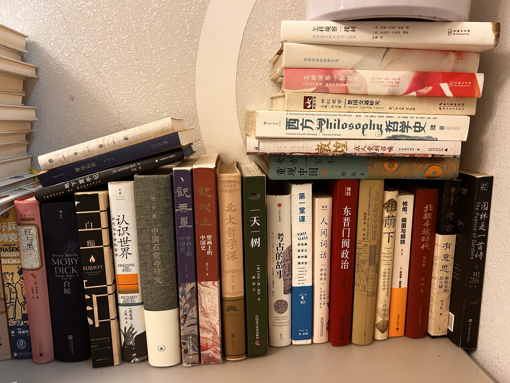

客厅右

- 地下室手记 （俄）陀思妥耶夫斯基 著 刘晨 译
- 摩尔后宫 王楠著
- 白鲸 Herman Melville 福尔曼·麦尔维尔 著
- 白痴 【俄】陀思妥耶夫斯基 著 耿济之 译
- 认识世界 古代与中世纪哲学 理查德·大卫·普莱希特 著 王俊等 译
- 中国石窟寺研究 上海译文出版社
- 观我生 壁画上的中国史 苗子兮 著
- 观无量 壁画上的中国史 苗子兮 著
- 北大哲学课 贾丹丹 编著
- 一天一树 【英】艾米-简·比尔 著 种杨 译 中国科学技术出版社 自然诗面 外藏经典
- 考古的故事 新思 中信出版集团 THE STORY OF THREE STONES MAKE A WALL ARCHAEOLOGY
- 考古一百年 重现中国 杨泓 著
- 敦煌 众人受到召唤 《生活月刊》著 DUNHUANG
- 西方哲学史 第9版 [美] 撒穆尔·伊诺克·斯通普夫 [美] 詹姆斯·菲泽 著 邓晓芒 匡宏 等译 Samuel Enoch Stumpf James Fieser A Historical Survey with Essential Readings 北京联合出版公司
- 第一堂课 在哈佛和芝大教中国美术史 CLASS CHINESE ART HARVARD UNIVERSITY FIRST
- 怎样观察一棵树 探寻常见树木的非凡秘密 （美）南茜·罗斯·胡格 著 罗伯特·卢埃林 摄影 阿黛 译 商务印书馆
- 怎样观察一朵花 发现花朵的秘密生活 （美）特里·邓恩·切斯 著 罗伯特·卢埃林 摄影 周玮 译 商务印书馆
- 怎样观察一粒种子 （美）特里·邓恩·切斯 著 罗伯特·卢埃林 摄影 一次进入种穗、种荚和果实世界的旅程 光合作用园艺 译 商务印书馆
- 人间词话 讲评本 叶嘉莹 讲评 王国维 著 果麦
- 世纪楚学 楚国交通研究 主编/刘玉堂 著/刘玉堂 袁纯富 湖北教育出版社
- 东晋门阀政治 田余庆 著
- 为什么研究中国建筑 Chinese Architecture: Art and Artifacts 梁思成 著 林洙 编 外研社
- 祖荫下 人格和社会流动 传统中国的亲属关系 许烺光
- 枪炮、病菌与钢铁 修订版 [美] 贾雷德·戴蒙德 上海译文出版社
- 北魏平城时代 第四版 李凭 著 上海古籍出版社
- 考古有意思 兵与城 秦始皇的 许卫红 著 中信出版
- 园林是一首诗 The Poetics of Gardens 四川科学技术出版社
共 27 本书，上传于 2026-10-04 10:57:03。